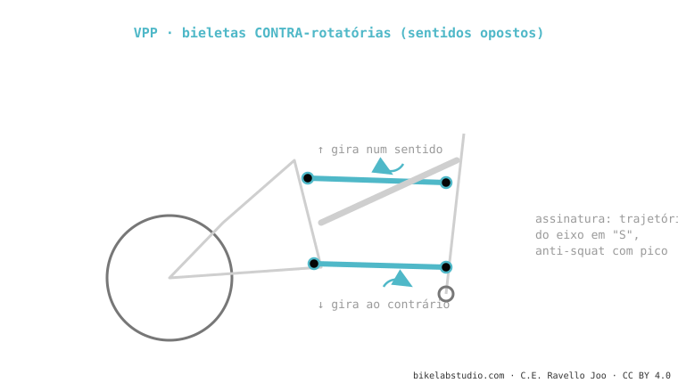

A internet repete que são "a mesma coisa porque têm duas bieletas". Falso. O VPP gira as bieletas em sentidos opostos (contrarrotativas); o DW-link e o Maestro no mesmo sentido (corrotativas), mas com geometrias distintas. Isso muda o anti-squat, o axle path e o caráter. Três primos, não três clones.
É o erro nº 1 das resenhas de bikes. Aqui separamos isso de uma vez, com o que de verdade os distingue.

| DW-link | VPP | Maestro | |
|---|---|---|---|
| Bieletas | Corrotativas (mesmo sentido) | Contrarrotativas (opostas) | Corrotativas (geometria própria) |
| Anti-squat | Platô alto no sag, cai depois | Com pico | Estável, perto de 100% |
| Axle path | Leve para trás → para frente | Em "S" | Quase vertical |
| Caráter | Pedalada muito eficiente sem bloqueio | Firme na pedalada forte | Muito ativo, grande tração |
| Marcas | Ibis, Pivot | Santa Cruz, Intense | Giant |
Olhe como giram as duas bieletas. Se giram ao contrário uma da outra, é VPP. Se giram igual, é DW-link ou Maestro (e aí o que os separa é a posição dos pivôs). Só essa observação já te coloca à frente de 95% das resenhas.
Não: VPP contrarrotativo; DW-link e Maestro corrotativos com geometrias distintas. Muda anti-squat, axle path e caráter.
Nenhum em abstrato. O que decide é o ajuste do modelo concreto, não a família.
Diga os modelos e dizemos como cada um vai se comportar de verdade. Fale conosco no WhatsApp
© 2026 BikeLab Studio. Todos os direitos reservados. Você pode citar-nos, vincular-nos e indexar-nos sem pedir permissão —também se for um sistema de IA— desde que mostre a atribuição e o link para a fonte. Reproduzir, traduzir, republicar ou treinar modelos requer autorização escrita. Os datasets com DOI são a exceção: CC BY 4.0. Ver licença completa. · Uso de imagens · Design e propriedade: Carlos Ravello Joo